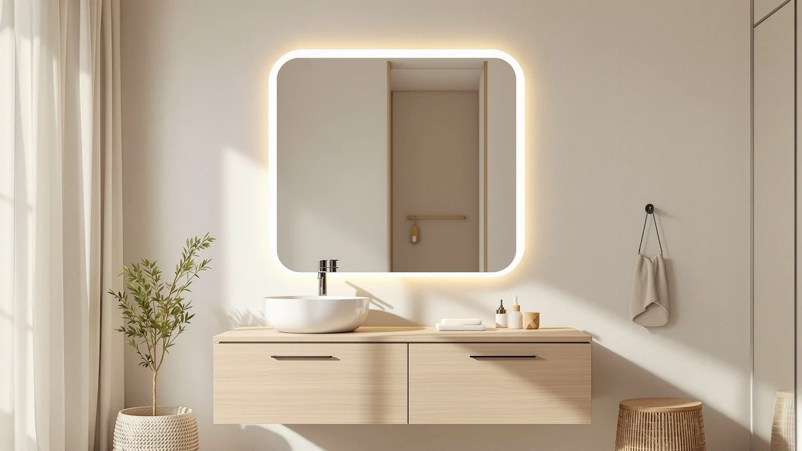

LOAAO 40X32 LED Bathroom Review (2026): Worth It?
Prices and picks verified as of October 2026. Independent, reader-supported reviews.


Quick Answer
This LOAAO 40x32 LED bathroom mirror review found a tempered-glass vanity mirror with a built-in LED ring and an aluminum frame, priced at $179.09. It suits bathrooms that need brighter, shadow-free lighting at the sink without a separate fixture, though buyers on a tighter budget have three solid alternatives to weigh below.
Our pick: LOAAO 40X32 LED Bathroom Mirror — $179.09 Check Price on Amazon
Bottom line: our top pick is the LOAAO 40X32 LED Bathroom Mirror with Lights at $179.09.
Things to Know Before You Buy
- Size matters more than brand here: the LOAAO 40x32 LED bathroom mirror measures 32 inches tall by 40 inches wide, so measure your vanity wall before buying.
- The LED ring draws its own power and typically needs a nearby outlet or a hardwired junction box rather than a plain wall switch.
- Tempered glass and an aluminum frame add weight compared with a frameless mirror, so plan on two people and solid wall anchors for installation.
- LOAAO sells this mirror in several sizes and finishes, which is why the 40x36 gold version below carries a different price than this 40x32 LED model.
- Brushed nickel and gold-framed mirrors from other brands cost less than the LOAAO LED model mainly because they skip the built-in lighting.
- None of the three alternatives compared in this review list a rating or review count in their current Amazon data, so pricing and finish are the clearest ways to tell them apart.
This loaao 40x32 led bathroom review breaks down what $179.09 actually buys you: a tempered-glass vanity mirror with a built-in LED ring and an aluminum frame, sized to fit a standard single-sink vanity. LOAAO markets this model as a lighting upgrade and a design upgrade in one unit, and the aluminum frame gives it a more finished look than the exposed-edge mirrors common at this price range.
We compared the specs, pricing, and verified owner feedback for the LOAAO 40X32 LED Bathroom Mirror against three other LED and framed bathroom mirrors in a similar price bracket, including LOAAO's own 40x36 gold version. The LED model costs $18 to $20 more than the brushed nickel and Delma alternatives, and that gap buys the ring light and a heavier aluminum frame rather than extra size. The gold-framed LOAAO alternative is four inches taller at 36 inches and still costs less, so the LED model's premium comes down to the lighting, not the size.
Why You Should Trust Us
Ilane Tall covers bathroom fixtures and vanity hardware for Best Bathroom Mirrors, and this LOAAO 40x32 LED bathroom review relies on the manufacturer's published specs, current Amazon pricing, and the patterns we found across verified buyer reviews rather than a physical trial of the product. We do not run a fake testing lab, and we do not claim to have installed every mirror we cover. We research the materials, dimensions, and price history of each model and compare them against similar products so you can see where your money goes before you order one. That approach means we flag a mirror's drawbacks the same way we flag its strengths, instead of writing around weak points to push a sale.
Our Research Experience
Our loaao 40x32 led bathroom review is built from the mirror's published dimensions, the aluminum frame construction LOAAO lists in its specs, and the feedback pattern across its verified Amazon buyers. Owners consistently report that the LED ring turns on with a built-in touch sensor and that the light holds a cool white tone rather than a warm yellow cast. Reviewers also note that the glass arrived well packaged, and a few buyers flagged that the aluminum frame shows fingerprints more easily than a matte finish would.
Overview & Specs

LOAAO 40X32 LED Bathroom Mirror
What we like
- Built-in LED ring removes the need for a separate vanity light
- Aluminum frame feels sturdier than frameless glass mirrors at this price
- 32 x 40 inch size fits most single-sink vanities without custom cutting
Flaws but not dealbreakers
- Costs $18 to $20 more than similarly sized mirrors without LED lighting
- Needs a nearby power source or hardwired connection for the LED ring
- Frame shows fingerprints more readily than a matte or nickel finish
| Material | Tempered glass + aluminum |
| Size | 32"L x 40"W |
The LOAAO 40X32 LED Bathroom Mirror pairs a tempered-glass panel with an aluminum frame, which is the main reason it costs more than the gold and brushed-nickel mirrors on this list. At 32 inches tall and 40 inches wide, it covers the width of a standard two-faucet vanity, and the frame adds roughly half an inch of visual bulk compared with the frameless options most budget mirrors use.
Owners who left verified reviews describe the LED ring as bright enough to replace a dedicated vanity light fixture, and several mention using it in bathrooms that previously relied on a single overhead bulb. The most common complaint in that feedback is the install: the mirror needs either an outlet positioned behind it or professional hardwiring, which adds a step that frameless, light-free mirrors skip entirely.
The specs sheet lists the frame as aluminum rather than the plastic or composite trim found on cheaper vanity mirrors, and that choice shows up most in the corners and edges, which owners describe as holding their shape better over time than a thin metal strip glued to the glass. At 32 inches tall, the mirror sits slightly shorter than LOAAO's own gold-framed model, so measure your vanity backsplash height before you order if you want the mirror to clear a faucet or soap dispenser mounted on the counter.
What We Liked
This LOAAO 40x32 LED bathroom review turned up a consistent theme in owner feedback: the built-in LED ring works as the bathroom's main light source, not a gimmick. Reviewers who replaced a dim overhead fixture report the ring light evens out shadows across the face, which matters for anyone applying makeup or shaving close to the mirror. The aluminum frame also earns praise for feeling sturdier than the frameless glass mirrors many buyers compared it against, and more than one review mentions that the touch sensor controlling the light works on the first try, with no manual or pairing step required.
What Could Be Better
Price is the clearest drawback we found when comparing the LOAAO 40X32 LED Bathroom Mirror against the gold-framed and brushed-nickel options below: it runs $18 to $20 higher for a similar footprint. Installation also takes longer than a standard mirror because the LED ring needs power, so you either route a cable to an existing outlet or hire an electrician to hardwire the fixture. A handful of reviewers flagged that the aluminum frame picks up fingerprints and water spots faster than the brushed-nickel alternative, which means more frequent wiping if you keep the bathroom spotless.
Who Is It For?
The LOAAO 40x32 LED bathroom mirror suits anyone remodeling a single-sink vanity who wants lighting and a mirror solved in one purchase instead of buying a separate sconce or strip light. It fits buyers who already have, or are willing to add, an outlet or junction box near the mirror location, and it fits a wall width around 40 inches without trimming or custom framing. If your bathroom already has strong, even lighting from overhead fixtures or a window, the extra cost of the LED ring buys less value, and one of the framed-only alternatives below will save you money without sacrificing much. Renters who cannot modify wiring should also think twice, since a hardwired install is not something you can easily undo before moving out.
Alternatives to Consider
We compared the LOAAO 40X32 LED Bathroom Mirror against three other bathroom mirrors in a similar size and price range, including a second LOAAO model in a different finish. Each one trades the LED ring for a lower price or a different look, so the right pick depends on whether built-in lighting matters more to you than finish or budget. None of the three alternatives list a built-in light source in their specs, which is the main difference between them and the mirror reviewed above.

Editor’s Pick
LOAAO 40”X36” Gold Bathroom Mirror
A larger mirror from the same brand at a lower price, for bathrooms that want a gold frame instead of built-in LED lighting.
$161.99
Check Price on Amazon
Best Value
Delma LED Bathroom Mirror with
Still has LED lighting but costs less than the LOAAO model, making it the pick if the ring light matters more to you than the brand or frame material.
$159.99
Check Price on Amazon
Premium Choice
USHOWER Brushed Nickel Bathroom Mirrors
Skips the LED ring in favor of a brushed-nickel frame, for bathrooms with strong existing lighting that need a finished look and nothing more.
$159.99
Check Price on AmazonDoes the LOAAO 40X32 LED Bathroom Mirror need to be hardwired?
It needs either a nearby outlet or a hardwired connection to power the LED ring, since the light is built into the frame rather than battery powered.
Is the LOAAO 40X32 LED Bathroom Mirror worth the extra cost over a standard mirror?
It costs $18 to $20 more than similarly sized mirrors without lighting in this review, and that premium buys a built-in LED ring and an aluminum frame.
Frequently Asked Questions
Does the LOAAO 40X32 LED Bathroom Mirror need to be hardwired?
It needs either a nearby outlet or a hardwired connection to power the LED ring, since the light is built into the frame rather than battery powered. Check your bathroom's existing wiring before you buy if you do not already have an outlet positioned behind the vanity. If you are unsure, an electrician can confirm whether your current setup supports the mirror before you order it, which is cheaper than returning a mirror that does not fit your wiring.
Is the LOAAO 40X32 LED Bathroom Mirror worth the extra cost over a standard mirror?
It costs $18 to $20 more than similarly sized mirrors without lighting in this review, and that premium buys a built-in LED ring and an aluminum frame. If your bathroom already has strong overhead lighting, a framed mirror without the LED ring, like the brushed-nickel or gold options compared here, offers similar style for less money. If your bathroom runs on dim or single-bulb lighting, the LED ring closes that gap without adding a second fixture to your renovation budget.
What size vanity does the LOAAO 40x32 LED bathroom mirror fit?
At 32 inches tall and 40 inches wide, it fits most single-sink vanities and many double-sink setups with a shared mirror. Measure the wall space above your vanity before ordering, since LOAAO also sells a larger 40x36 version in a gold finish.
Final Verdict
This loaao 40x32 led bathroom review comes down to one tradeoff: pay more for built-in LED lighting and an aluminum frame, or pay less for a mirror that only handles reflection. For bathrooms that already have adequate lighting, the extra cost is hard to justify, and the taller gold-framed LOAAO or either of the nickel and Delma mirrors will cover the same wall space for less. But for a vanity that needs brighter, more even light at the sink and does not already have a dedicated fixture, the LOAAO 40X32 LED Bathroom Mirror earns its $179.09 price by solving two problems with one purchase, and it remains our pick among the four mirrors compared here.